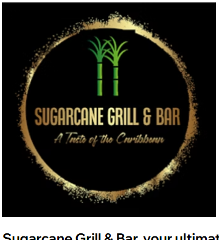

Community driven
Built with local people
BAFT works alongside communities to shape practical projects that are rooted in genuine local need and community buy-in.
Build A Future Together CIC (BAFT) supports communities through a practical self-build approach that responds to housing inequality, limited community resources and reduced life chances. Our work is designed to create confidence, opportunity and long-term local benefit.

BAFT works alongside communities to shape practical projects that are rooted in genuine local need and community buy-in.
Our model supports confidence, teamwork, practical learning and pathways into employment, leadership and long-term progression.
From homes to community spaces, BAFT helps create assets that strengthen neighbourhoods and support future generations.
We bring together research, planning, community engagement and delivery so projects are not only built well, but built with purpose.

Welcome to Sugarcane Grill & Bar, your ultimate Caribbean culinary destination nestled on Huddersfield Road in the vibrant town of Mirfield.
MW Computer Solutions provides PC and Mac repairs, network, WiFi and internet solutions, and data backup support.